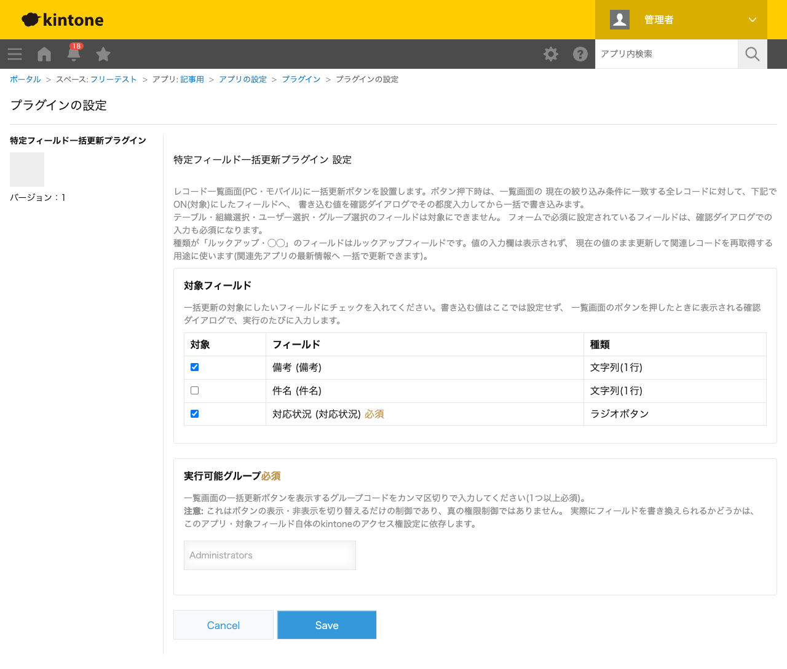
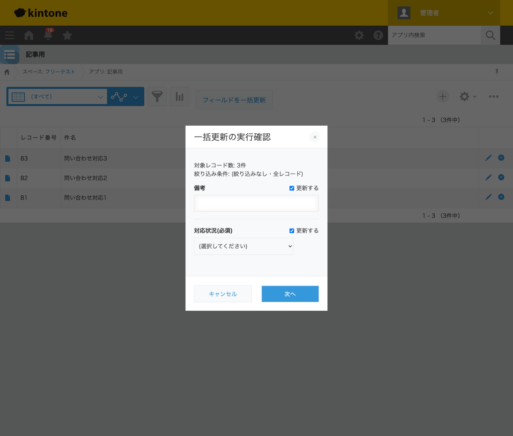
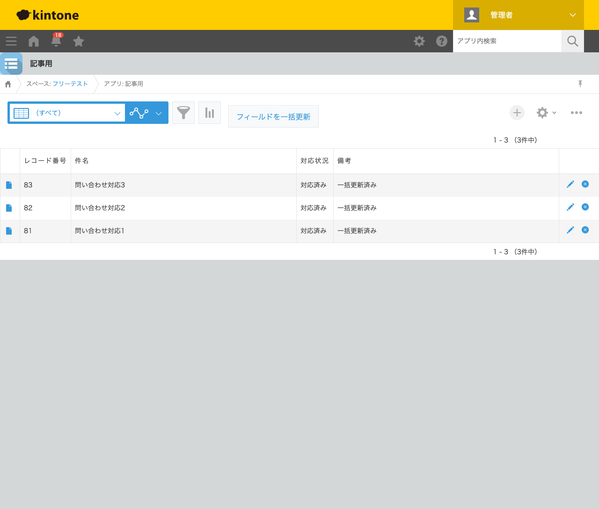

GovAppsプラグイン 安全性を確認できる無料kintoneプラグイン集
「一覧で絞り込んだ問い合わせをまとめて『対応済み』にしたい」「特定の条件のレコードの担当欄を 一斉に変更したい」といった場面で、レコードを1件ずつ開いて編集するのは大きな手間です。この記事では、 一覧画面の絞り込み条件に一致する複数レコードへ、指定したフィールドの値をまとめて書き込む方法を、 実際の設定画面と実行結果つきで解説します。
kintoneの標準機能には、レコード一覧からの一括削除やCSVでの一括インポートはありますが、 「画面上で選んだ複数レコードの特定フィールドだけをまとめて書き換える」機能はありません。 CSVインポートで一括更新することも可能ですが、対象レコードの抽出・列の編集・再取り込みという 手順が必要で、値を変えるたびにファイル操作が発生します。JavaScriptカスタマイズを自作すれば、 現在の絞り込み条件を取得してレコードカーソルAPIで列挙し、100件ずつバッチでPUTする処理を 書けば実現できますが、実装・保守コストは小さくありません。
「絞り込んだレコードのフィールドをまとめて更新する」機能を用意する方法は、大きく4つあります。 それぞれの向き不向きをまとめました。
| 方法 | 向いている場合 | 注意点 |
|---|---|---|
| kintone標準機能(CSVインポート等)のみ | 更新頻度が低く、ファイル操作の手間が気にならない場合 | 抽出・編集・再取り込みの手順が都度発生する |
| JavaScriptを自作する | 社内に開発者がいて、独自の絞り込み・入力要件が多い場合 | カーソルAPI・バッチ書き戻しの実装・保守が必要。担当者の異動時に引き継ぎコストがかかる |
| 有料の他社プラグイン | 予算があり、手厚いサポートを求める場合 | 月額課金が発生する。ソースコードが非公開で、外部通信の有無を利用者側で確認しにくいことが多い |
| GovAppsプラグイン(このプラグイン) | 無料で試したい、社内・庁内でセキュリティを確認してから導入したい場合 | 機能追加の要望はGitHub Issueベース(個別カスタマイズの請負は行っていない) |
GovAppsのプラグインはすべて無料・広告なしで、追加課金なしで使い続けられます。 ソースコードはGitHubで全公開しているオープンソースなので、 「本当に外部と通信していないか」「入力値をどう扱っているか」を自治体・企業のセキュリティ担当者 自身の目で確認できます(このプラグインも個別ページにセキュリティレビュー結果を掲載しています)。
特定フィールド一括更新プラグインは、設定画面では 「どのフィールドを対象にするか」だけを決め、書き込む値そのものは一覧画面のボタンを 押すたびに確認ダイアログで入力する仕組みです。設定はこの2ステップです。

レコード一覧画面の「フィールドを一括更新」ボタンを押すと、現在の絞り込み条件と対象レコード数が 表示され、対象フィールドごとに「更新する」チェックボックスと入力欄が並びます。今回は絞り込みなし (全レコード、3件)の状態で実行しました。ラジオボタンのようにフォームで必須設定のフィールドは、 この確認ダイアログでも入力が必須になります。

「対応状況」を「対応済み」、「備考」を「一括更新済み」と入力して次へ進むと、確定した値を 見直す最終確認ダイアログが表示され、「更新」を押すと絞り込み条件に一致する3件すべてが 同時に書き換わります。

「更新する」チェックを外したフィールドは書き込み対象から除外され、既存の値のまま変更されません。 件名のようにチェックを入れなかったフィールドも同様に、元の値がそのまま残ります。